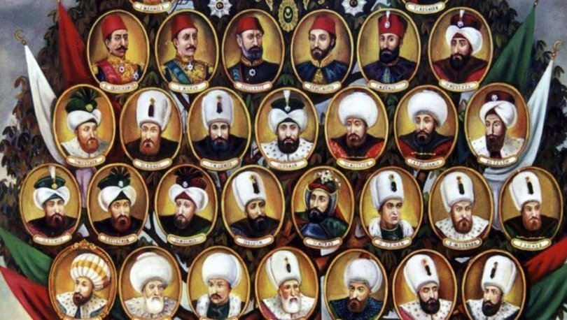

Osmanlı Padişahları, Osmanlı Padişahları Sırasıyla, Osmanlı Padişahları Hayatları, Osmanlı Padişahları Kimdir? Dünya tarihinin en büyük imparatorluklarından birisidir. 1299 yılında Söğüt'te kurulan Osmanlı Devleti, 3 kıtaya hükmetmiş bir imparatorluktur. Osmanlı İmparatorluğu'nun Osman Bey(Gazi)'den son padişah IV.Mehmed'e kadar tüm padişahlarının sıralı listesini sizler için resimli bir hâlde oluşturduk. 600 yılı aşkın imparatorluk süresince tam 36 padişah tahta geçmiştir. Osman Bey'in kurduğu Osmanlı Devleti; 1. Murat ile Avrupa'ya açılarak Edirne'yi fethetmiştir. Yıldırım Beyazıd ile Timur ile yaşanan Ankara Savaşı'ndan sonra fetret devri yaşansa da Çelebi Mehmet ile fetret dönemi sona ermiştir.
Fatih Sultan Mehmet Han'ın İstanbul'u fethetmesinden sonra Osmanlı Devleti, Osmanlı İmparatorluğu'na dönüşmüştür. Fatih Sultan Mehmet, Yavuz Sultan Selim ve Kanuni Sultan Süleyman döneminde imparatorluk hazinesi en yüksek gelirine ulaşmış. Halifelik Osmanlı Devleti'ne geçmiştir. Fatih Sultan Mehmet, Yavuz Sultan Selim ve Kanuni Sultan Süleyman Osmanlı İmparatorluğu'nun en başarılı padişahları olarak tarihe geçmiştir. Ayrıca Kanuni Sultan Süleyman döneminde Osmanlı İmparatorluğu en geniş toprak alanlarına ulaşmıştır. Kanuni Sultan Süleyman 46 yıl tahta kalarak en uzun padişahlık yapan isim olarak tarihe geçmiştir.